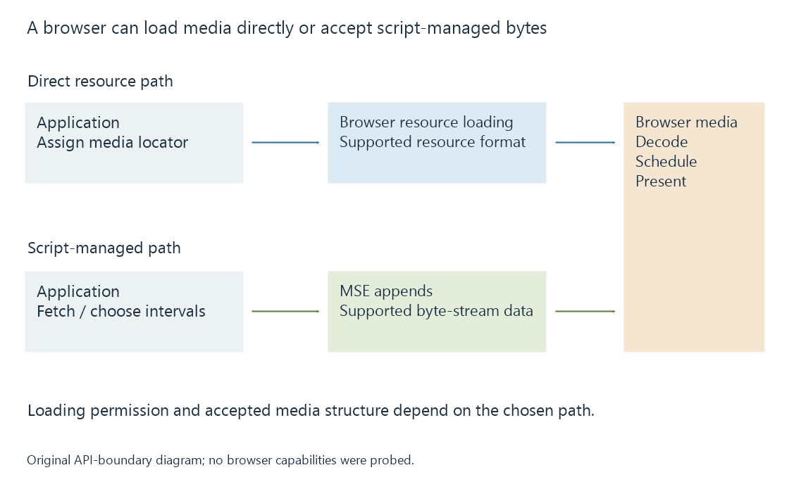

Browser media playback and its loading paths
Browser media playback combines web application logic, browser media APIs, permitted resource loading and the available decoding and presentation path.
A browser player uses the browser's media facilities inside a web application. The application chooses a resource or delivery path, while the browser performs supported media parsing, decoding and presentation.
The operating system may contribute decoders or output facilities, but a format available to a native application is not automatically exposed through every browser media API.
Two ways to supply the media
A web player can assign a media resource directly to an HTML media element. The browser then manages the supported resource-loading path.
Alternatively, application JavaScript can fetch encoded media and feed it through Media Source Extensions. A library can use that arrangement to implement segmented delivery and adaptation over the browser's underlying media engine.

| Path | What the application supplies |
|---|---|
| Direct media resource | A resource locator and player configuration |
| Script-managed MSE | Encoded byte-stream data, append scheduling and media-selection logic |
A browser with native HLS resource support can interpret an HLS URL through its own path. A browser using an HLS JavaScript library may instead receive suitable media through MSE. The same protocol label can therefore conceal different loading and compatibility requirements.
Resource access and script access have different rules
Opening a media URL successfully is useful evidence that a particular navigation or loading route can access it. It does not establish that another web page's JavaScript may read its response.
Consider a fictional web app served from one origin and a media resource served from another. Direct media-element playback can work in circumstances where a script cannot read the cross-origin response. A script-managed player using Fetch needs the appropriate cross-origin response behavior, including credential handling when applicable.
This is a loading-path issue, separate from whether the downloaded encoded pictures could be decoded. A permissive container parser does not change the browser's origin rules.
The same distinction matters for cast receivers implemented as web applications: the phone's successful request and the receiver's allowed request have different origins and access contexts.
The supported configuration is the selected one
Browser playback depends on more than a codec family name. Container and byte-stream format, profile, dimensions, cadence, selected audio and text handling all participate.
A browser can accept a simple MP4 resource without accepting an arbitrary MP4 byte sequence through MSE. A chosen MSE byte-stream format has its own initialization and fragment structure.
For an Emby Web session, the server can adapt the selected media to the path the app and browser can use. That can mean packaging changes, audio conversion or video conversion depending on the actual incompatibility.
Diagnose the stage that produced the observation
| Observation | Stage to examine |
|---|---|
| Media resource request is refused | Loading and access context |
| Script cannot read a cross-origin response | Fetch/CORS behavior for that request |
| MSE append reports an error | Byte-stream interpretation and append state |
| play() rejects before presentation starts | Promise result, including policy or loading failure |
| Pictures begin and then drop | Decode/presentation timing and available media |
An autoplay restriction can prevent an otherwise supported source from starting without the required interaction. A codec prediction can report a plausible configuration before any actual resource has been fetched.
See Also
- HTML media elements, state and time ranges
- Media Source Extensions (MSE) and scripted media delivery
- Browser codec detection and capability predictions
- Browser autoplay restrictions and playback permission
- Encrypted Media Extensions (EME) and browser key sessions
- Native media players and their playback engines